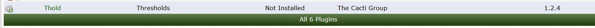

Installing plugins on cacti is a simple procedure
Step 1 download the plugin to cactidir/cacti/plugins
git clone https://github.com/Cacti/plugin_thold.git
mv plugin_thold /var/www/html/cacti/plugins
Now assign the proper permissions to the folder
chown -R www-data:www-data plugin_thold
Below you will now see the THOLD plugin avaliable to install in this case we are installing thold
.
After installing the plugin by clicking on the grey gear you will now how to enable it this can be done via clicking on the green check mark
To uninstall a plugin go into the plugins page console >> configuration >> plugins Click on the plugin to disable the plugin
Click on the red dot beside the plugin to uninstall the plugin a dialouge box will appear now click uninstall.
This will uninstall the plugin from cacti but will NOT remove the files from the server to do that you must manually remove the plugin until you remove the files the plugin will show to be avaliable to be installed.
Some dependencies such as THOLD aka Thresholds rely on another plugin in this case thold reliese on the monitor plugin which is missing in this case you will see the below messege box in order to continue you must install the required plugin.

Copyright (c) 2004-2020 The Cacti Group